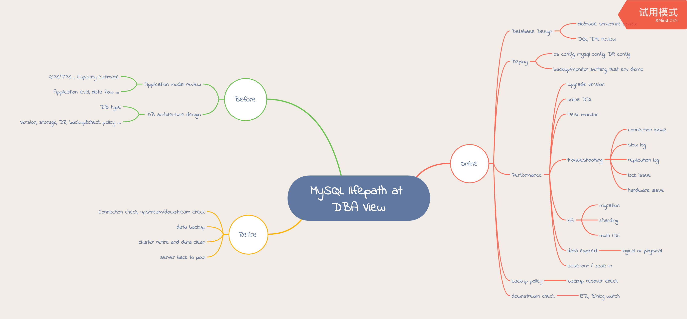

<!DOCTYPE html>
<html>
<head><meta name="generator" content="Hexo 3.9.0">
  <meta charset="utf-8">
  

  
  <title>Try Everything</title>
  <meta name="viewport" content="width=device-width, initial-scale=1, maximum-scale=1">
  <meta name="description" content="learning note">
<meta name="keywords" content="GoLang,DBA">
<meta property="og:type" content="website">
<meta property="og:title" content="Try Everything">
<meta property="og:url" content="http://sandysandy.github.io/index.html">
<meta property="og:site_name" content="Try Everything">
<meta property="og:description" content="learning note">
<meta property="og:locale" content="en,zh-cn">
<meta name="twitter:card" content="summary">
<meta name="twitter:title" content="Try Everything">
<meta name="twitter:description" content="learning note">
  
    <link rel="alternate" href="/atom.xml" title="Try Everything" type="application/atom+xml">
  
  
    <link rel="icon" href="/favicon.png">
  
  
    <link href="//fonts.googleapis.com/css?family=Source+Code+Pro" rel="stylesheet" type="text/css">
  
  <link rel="stylesheet" href="/css/style.css">
</head>
</html>
<body>
  <div id="container">
    <div id="wrap">
      <header id="header">
  <div id="banner"></div>
  <div id="header-outer" class="outer">
    <div id="header-title" class="inner">
      <h1 id="logo-wrap">
        <a href="/" id="logo">Try Everything</a>
      </h1>
      
        <h2 id="subtitle-wrap">
          <a href="/" id="subtitle">just move it</a>
        </h2>
      
    </div>
    <div id="header-inner" class="inner">
      <nav id="main-nav">
        <a id="main-nav-toggle" class="nav-icon"></a>
        
          <a class="main-nav-link" href="/">Home</a>
        
          <a class="main-nav-link" href="/archives">Archives</a>
        
      </nav>
      <nav id="sub-nav">
        
          <a id="nav-rss-link" class="nav-icon" href="/atom.xml" title="RSS Feed"></a>
        
        <a id="nav-search-btn" class="nav-icon" title="Search"></a>
      </nav>
      <div id="search-form-wrap">
        <form action="//google.com/search" method="get" accept-charset="UTF-8" class="search-form"><input type="search" name="q" class="search-form-input" placeholder="Search"><button type="submit" class="search-form-submit">&#xF002;</button><input type="hidden" name="sitesearch" value="http://sandysandy.github.io"></form>
      </div>
    </div>
  </div>
</header>
      <div class="outer">
        <section id="main">
  
    <article id="post-database-review-path-md" class="article article-type-post" itemscope itemprop="blogPost">
  <div class="article-meta">
    <a href="/2022/03/29/database-review-path-md/" class="article-date">
  <time datetime="2022-03-29T10:47:58.000Z" itemprop="datePublished">2022-03-29</time>
</a>
    
  </div>
  <div class="article-inner">
    
    
      <header class="article-header">
        
  
    <h1 itemprop="name">
      <a class="article-title" href="/2022/03/29/database-review-path-md/">database_review_path.md</a>
    </h1>
  

      </header>
    
    <div class="article-entry" itemprop="articleBody">
      
        <p>DBA veiw</p>
<p></p>
<p></p>
<p></p>
<p></p>

      
    </div>
    <footer class="article-footer">
      <a data-url="http://sandysandy.github.io/2022/03/29/database-review-path-md/" data-id="cl1bkcmab000by8tujp3c9oci" class="article-share-link">Share</a>
      
      
  <ul class="article-tag-list"><li class="article-tag-list-item"><a class="article-tag-list-link" href="/tags/RDBMS/">RDBMS</a></li></ul>

    </footer>
  </div>
  
</article>


  
    <article id="post-Mariadb开发者大会2019记录" class="article article-type-post" itemscope itemprop="blogPost">
  <div class="article-meta">
    <a href="/2019/11/21/Mariadb开发者大会2019记录/" class="article-date">
  <time datetime="2019-11-20T20:16:18.000Z" itemprop="datePublished">2019-11-20</time>
</a>
    
  </div>
  <div class="article-inner">
    
    
      <header class="article-header">
        
  
    <h1 itemprop="name">
      <a class="article-title" href="/2019/11/21/Mariadb开发者大会2019记录/">Mariadb开发者大会2019记录</a>
    </h1>
  

      </header>
    
    <div class="article-entry" itemprop="articleBody">
      
        <h3 id="MariaDB开发者会议2019"><a href="#MariaDB开发者会议2019" class="headerlink" title="MariaDB开发者会议2019"></a><a href="https://mariadb.org/2019-developers-unconference-shanghai/" target="_blank" rel="noopener">MariaDB开发者会议2019</a></h3><ul>
<li><p>简介</p>
<p>  围绕MariaDB开源项目展开深度演讲与交流。届时很多核心MariaDB开发者也将出席会议。能够提供一个面对面交流的平台，使新老开发者们能共同破解难题或者规划未来。</p>
</li>
<li><p><a href="https://docs.google.com/spreadsheets/d/1_IaJ5uxUE6rBwoeMD_VvpGHue7COwGabsyOfJwMXrXg/edit#gid=759092446" target="_blank" rel="noopener">会议议程</a></p>
</li>
<li><p>简单记录</p>
<ul>
<li><p>Day 1</p>
<ul>
<li>MariaDB基金会介绍，运作生态，用户分布等</li>
<li>MariaDB发展历程，起源发展和未来</li>
<li>开发者导航，成为开源贡献者，回馈社区</li>
<li>修改表结构在MariaDB的优化，新增修改表结构算法instant，支持不锁表在线添加字段，瞬间完成</li>
<li>Query路径，从客户端链接–语意解析–查询优化(查询缓存)–引擎接口–服务端返回整条链路串讲</li>
<li>MariaDB主要类&amp;结构及如何关联，主要代码结构</li>
<li>如何添加新功能及Debug，添加规则，调试推荐方式等</li>
<li>概述MariaDB优化器如何工作</li>
</ul>
</li>
<li><p>Day 2</p>
<ul>
<li>MariaDB 定制特性Spider在腾讯游戏的应用</li>
<li>MariaDB 特性支持计划：DDL回收箱，回收删除表数据，支持闪回，AliSQL已支持。</li>
<li>关于MDEV-12353, MDEV-14425正在进行的Redo log格式优化工作，记录信息的优化等</li>
<li>常用查询的内存管理功能概述</li>
<li>TenDB集群Operator在k8s的应用实践，内部测试阶段</li>
<li>InnoDB 线程池设计：work items，async io，timers等优化，降低系统开销</li>
<li>MariaDB-10.5新特性及未来计划<ul>
<li>支持S3存储<ul>
<li>归档表设置存储引擎为S3</li>
<li>归档表只读</li>
<li>支持多源访问</li>
<li>创建S3表时的bucket优化</li>
<li>S3 表缓存优化</li>
<li>S3 表的复制相关</li>
</ul>
</li>
<li>移除TokuDB引擎，因为不再维护</li>
<li>insert returning</li>
<li>replace returning</li>
<li>information schema 设置记录线程池相关信息表<ul>
<li>threadpool group</li>
<li>threadpool queues</li>
<li>threadpool stats</li>
</ul>
</li>
<li>添加 Clustrix 存储引擎（10.5 or 10.6）</li>
<li>语法级支持删除批量提交</li>
<li><a href="https://jira.mariadb.org/issues/?jql=project%20%3D%20MDEV%20AND%20issuetype%20%3D%20Task%20AND%20fixVersion%20in%20(10.5)%20ORDER%20BY%20priority%20DESC" target="_blank" rel="noopener">计划优化列表见jira about 10.5 plan</a></li>
</ul>
</li>
</ul>
</li>
</ul>
</li>
</ul>

      
    </div>
    <footer class="article-footer">
      <a data-url="http://sandysandy.github.io/2019/11/21/Mariadb开发者大会2019记录/" data-id="cl1bkcma00000y8tupnuptnyh" class="article-share-link">Share</a>
      
      
  <ul class="article-tag-list"><li class="article-tag-list-item"><a class="article-tag-list-link" href="/tags/MariaDB/">MariaDB</a></li></ul>

    </footer>
  </div>
  
</article>


  
    <article id="post-TiDB学习记录-数据迁移" class="article article-type-post" itemscope itemprop="blogPost">
  <div class="article-meta">
    <a href="/2019/11/17/TiDB学习记录-数据迁移/" class="article-date">
  <time datetime="2019-11-17T14:16:27.000Z" itemprop="datePublished">2019-11-17</time>
</a>
    
  </div>
  <div class="article-inner">
    
    
      <header class="article-header">
        
  
    <h1 itemprop="name">
      <a class="article-title" href="/2019/11/17/TiDB学习记录-数据迁移/">TiDB学习记录-数据迁移</a>
    </h1>
  

      </header>
    
    <div class="article-entry" itemprop="articleBody">
      
        <h3 id="TiDB集群和他的朋友们"><a href="#TiDB集群和他的朋友们" class="headerlink" title="TiDB集群和他的朋友们"></a>TiDB集群和他的朋友们</h3><ul>
<li><p><a href="https://pingcap.com/docs-cn/stable/reference/tools/mydumper/" target="_blank" rel="noopener">官方文档</a></p>
</li>
<li><p>TiDB Binlog 是一个用于收集 TiDB 的 binlog，并提供准实时备份和同步功能的商业工具。</p>
<ul>
<li>主要组成：Pump，Drainer，binlogctl<ul>
<li>Pump，记录binlog并按照事务的提交时间排序，提供给Drainer消费</li>
<li>Drainer，从集群的每个pump收集binlog进行合并，转化成指定格式（mysql/tidb，file，kafka，pb）同步到下游</li>
<li>binlogctl，命令行管理工具，查看&amp;更新pump/drainer状态</li>
</ul>
</li>
<li>tips<ul>
<li>Ansible统一部署维护</li>
<li>pump&amp;drainer状态互相依赖，如果有异常，用binlogctl检查两者状态</li>
</ul>
</li>
</ul>
</li>
</ul>
<ul>
<li><p>Mydumper + Loader TiDB备份及恢复工具</p>
<ul>
<li><p>fork Mydumper &amp; 优化针对TiDB特性，比如可以设置时间戳指定备份时间等。注意，如果集群单表数据量大，建议设置参数对导出文件进行分割，方便在使用备份文件夹恢复时，可以充分利用多线程加快恢复速度。</p>
</li>
<li><p>Loader 官方自研，能够读取Mydumper的输出文件，通过MySQL protocol 向TiDB/MySQL中导入数据</p>
</li>
</ul>
</li>
<li><p>Syncer 增量数据同步工具，将MySQL的数据增量导入到TiDB，作为MySQL的一个从库的角色，根据binlog+position的位置拉取上游数据，同步到下游集群</p>
<ul>
<li>功能支持<ul>
<li>支持gtid，binglog+position</li>
<li>支持同步过滤白名单/黑名单</li>
<li>支持所有或者指定库表的DDL/DML跳过</li>
<li>支持上游多个数据来源的合并到下游集群，指定sharding规则实现</li>
<li>同步前检查上游数据库版本，字符集，sqlmode，同步的表是否有主键或者唯一索引</li>
</ul>
</li>
<li>通过prometheus监控告警同步状态，上下游数据同步位置等</li>
</ul>
</li>
<li><p>Data Migration（DM）一体化的数据同步任务管理平台，支持从 MySQL 或 MariaDB 到 TiDB 的全量数据迁移和增量数据同步。使用 DM 工具有利于简化错误处理流程，降低运维成本</p>
<ul>
<li>主要结构：DM-master，DM-worker，dmctl<ul>
<li>DM-master，管理调度DM-worker<ul>
<li>DM-worker，执行具体的同步task，dumper + loader + syncer/binlogrepl</li>
<li>dmctl，命令行工具</li>
</ul>
</li>
</ul>
</li>
<li>分库分表合并，白名单/黑名单，过滤指定类型binlog，同步延迟监控</li>
<li>多个上游变更合并下发，一个worker可以支持多个任务，支持多个woker</li>
<li>任务复杂是，借助网页程序 DM Portal 生成可以直接让woker执行的task配置文件</li>
</ul>
</li>
<li><p>TiDB Lighting 全量数据高速导入TiDB工具</p>
<ul>
<li>主要结构：tidb-lighting，tikv-importer<ul>
<li>tidb-lighting，读取上游数据源，在下游建表，将数据转换成kv对发送给tikv-importer，检查数据完整性等</li>
<li>tikv-importer，将lighting发来的kv对缓存，排序，切分并导入到TiKV集群</li>
</ul>
</li>
<li>tips<ul>
<li>独立于下游TiDB集群部署，避免资源争用，加快导入速度</li>
<li>导入过程中，集群不可用</li>
<li>上游数据文件最好是小文件形式，部署多个Lighting+importer 加速导入</li>
<li>lighting异常可以重启，重启前清理临时sock文件</li>
<li>断点续传信息存储文件或者单独数据库</li>
<li>注意目标集群空间足够，总存储必须 &gt;  数据源大小 * 副本数量 * 2</li>
</ul>
</li>
</ul>
</li>
<li><p>PD Control 是 PD 的命令行工具，用于获取集群状态信息和调整集群，基本信息在PD 监控面板也可以看到，主要用来集群配置参数调整，调度参数调整，store 节点管理 等</p>
</li>
</ul>
<h3 id="上下游数据迁移有多少种排列组合"><a href="#上下游数据迁移有多少种排列组合" class="headerlink" title="上下游数据迁移有多少种排列组合"></a>上下游数据迁移有多少种排列组合</h3><ul>
<li><p>从哪里来</p>
<ul>
<li>从Mydumper备份文件来，可以选择的交通方式有<ul>
<li>Lighting</li>
</ul>
</li>
<li>从CSV来，可选择的交通方式有<ul>
<li>Lighting</li>
</ul>
</li>
<li>从MySQL来，可以选择的交通方式有<ul>
<li>Syncer</li>
<li>DM</li>
</ul>
</li>
<li>从Amazon Aurora来，可选择的交通方式有<ul>
<li>DM</li>
</ul>
</li>
</ul>
</li>
<li><p>到哪里去，都用 Pump + Drainer</p>
<ul>
<li>去MySQL/TiDB</li>
<li>去Kafka</li>
<li>去flash</li>
<li>去file</li>
</ul>
</li>
</ul>

      
    </div>
    <footer class="article-footer">
      <a data-url="http://sandysandy.github.io/2019/11/17/TiDB学习记录-数据迁移/" data-id="cl1bkcma70004y8tud6k92rui" class="article-share-link">Share</a>
      
      
    </footer>
  </div>
  
</article>


  
    <article id="post-TiDB学习记录-监控入门" class="article article-type-post" itemscope itemprop="blogPost">
  <div class="article-meta">
    <a href="/2019/11/17/TiDB学习记录-监控入门/" class="article-date">
  <time datetime="2019-11-17T12:58:06.000Z" itemprop="datePublished">2019-11-17</time>
</a>
    
  </div>
  <div class="article-inner">
    
    
      <header class="article-header">
        
  
    <h1 itemprop="name">
      <a class="article-title" href="/2019/11/17/TiDB学习记录-监控入门/">TiDB学习记录-监控入门</a>
    </h1>
  

      </header>
    
    <div class="article-entry" itemprop="articleBody">
      
        <h2 id="TiDB追番记录-中"><a href="#TiDB追番记录-中" class="headerlink" title="TiDB追番记录(中)"></a>TiDB追番记录(中)</h2><h3 id="好多好多监控"><a href="#好多好多监控" class="headerlink" title="好多好多监控"></a>好多好多监控</h3><p>   文档非常详细，监控项非常多，入门选手从overview面板开始，官方文档支持全文搜索，可以很方便找到每个监控项定义。</p>
<h4 id="1-官方文档"><a href="#1-官方文档" class="headerlink" title="1.官方文档"></a>1.官方文档</h4><ul>
<li><a href="https://pingcap.com/docs-cn/stable/how-to/monitor/overview/" target="_blank" rel="noopener">监控说明</a>，概述TiDB的监控架构，部署方式</li>
<li><a href="https://pingcap.com/docs-cn/stable/reference/key-monitoring-metrics/overview-dashboard/" target="_blank" rel="noopener">监控指标</a>，各组件监控面板划分，及监控指标</li>
<li><a href="https://pingcap.com/docs-cn/stable/reference/alert-rules/#tidb_memory_abnormal" target="_blank" rel="noopener">告警规则</a>，各组件的报警规则及重要等级，包括 TiDB、TiKV、PD、TiDB Binlog、Node_exporter 和 Blackbox_exporter 的各报警项的规则描述及处理方法。</li>
</ul>
<h4 id="2-主要监控项"><a href="#2-主要监控项" class="headerlink" title="2.主要监控项"></a>2.主要监控项</h4><ul>
<li><p>Overview 面板，集群概况，各组件主要信息状态，可以大致缩小排查集群瓶颈的范围，再结合组件详细面板，慢日志，实例错误日志和业务日志定位问题</p>
<ul>
<li><p>Services Port Status，各组件状态，异常么有显示具体组件地址，结合告警信息查看</p>
<ul>
<li>count(probe_success{group=”{各组件名}”} == 1) ，是否存在异常状态节点</li>
</ul>
</li>
</ul>
</li>
</ul>
<pre><code>- PD，集群容量，region 基本健康状态信息

    - region health，在迁移或者扩容的过程中，可以监控到store及region的平衡状态


    - 是否存在读/写热点，也可以根据慢日志里统计是否都来自同一个kv实例


    - region heartbeat，每个tikv上报pd的心跳，如果心跳上报过多，超过10w，考虑扩容kv，或者尝试静默region，结合99% region health latency 判断


- TiDB，db组件状态，直接反映集群对外提供服务的健康程度，QPS，Duration现象直观

    - 集群当前的QPS 以及 每个db实例的连接数


    - 执行耗时三个纬度，结合kv cmd duration 判断耗时主要在哪个组件


    - db节点内存使用量，结合告警阀值配置及时扩容


    - kv命令执行数量和kv命令执行时间，结合上面的QPS和duration，缩小定位范围


    - kv返回的错误信息，事务冲突数量


- TiKV，kv组件状态，存储层资源状态，容量使用情况等
    - scheduler pending commands 写入是否有堆积

    - coprocessor, TiKV 中查询消耗的时间及各类查询耗时

    - Coprocessor CPU：TiKV 查询线程的 CPU 使用率，和业务相关，复杂查询会使用大量的 CPU 资源
    - raftstore 线程的 CPU 使用率，线程数量默认为 2 (通过 conf/tikv.toml raftstore.store-pool-size 配置)。如果单个线程使用率超过 80%，说明使用率很高


- System Info，服务器层概况，CPU，内存，IO，网络四大名捕</code></pre><ul>
<li><p>PD面板，PD配置，集群调度情况</p>
<ul>
<li><p>Cluster 集群容量，基本配置信息，当前tso，集群ID等</p>
<ul>
<li>PD scheduler config：PD 调度配置列表</li>
</ul>
</li>
</ul>
</li>
</ul>
<ul>
<li><p>TiDB面板，Query信息，慢查询的统计信息，也可以看日志来分析</p>
</li>
<li><p>TiKV面板，Store信息，region分布，raft监控项</p>
<ul>
<li>scheduler pending commands,是否存在写入堆积</li>
</ul>
</li>
<li><p>tikv-summary 面板，kv信息汇</p>
</li>
<li><p>tikv-details面板，各项详情</p>
<ul>
<li><p>thread cpu </p>
<ul>
<li>raft store cpu (这个图overview有，在tikv目录)，3.0版本默认最多使用2个线程，所以上限制是200%，如果系统已经达到这个限制，说明raft写入存在瓶颈，需要进一步排查</li>
</ul>
</li>
<li><p>gRPCa</p>
<ul>
<li>gRPC message count，每种 gRPC 消息的个数</li>
</ul>
</li>
<li><p>coprocess，</p>
<ul>
<li>coprocess cpu &amp; scan keys (这个图overview有，在tikv目录)，展示当前集群读请求的状态是否存在热点</li>
</ul>
</li>
</ul>
</li>
<li><p>tikv-trouble-shooting面板，按照异常分类，可以定位到具体某个kv实例异常</p>
</li>
<li><p>还有其他比如binlog,drainer,syncer,lighting,DM 等监控详情，具体问题具体分析，可能出现在下期。</p>
</li>
</ul>

      
    </div>
    <footer class="article-footer">
      <a data-url="http://sandysandy.github.io/2019/11/17/TiDB学习记录-监控入门/" data-id="cl1bkcma80005y8tudixeee5z" class="article-share-link">Share</a>
      
      
  <ul class="article-tag-list"><li class="article-tag-list-item"><a class="article-tag-list-link" href="/tags/TiDB/">TiDB</a></li></ul>

    </footer>
  </div>
  
</article>


  
    <article id="post-TiDB学习记录" class="article article-type-post" itemscope itemprop="blogPost">
  <div class="article-meta">
    <a href="/2019/11/02/TiDB学习记录/" class="article-date">
  <time datetime="2019-11-01T16:39:59.000Z" itemprop="datePublished">2019-11-01</time>
</a>
    
  </div>
  <div class="article-inner">
    
    
      <header class="article-header">
        
  
    <h1 itemprop="name">
      <a class="article-title" href="/2019/11/02/TiDB学习记录/">TiDB学习记录</a>
    </h1>
  

      </header>
    
    <div class="article-entry" itemprop="articleBody">
      
        <h2 id="TiDB追番记录"><a href="#TiDB追番记录" class="headerlink" title="TiDB追番记录"></a>TiDB追番记录</h2><h3 id="1-很有帮助的几个网站"><a href="#1-很有帮助的几个网站" class="headerlink" title="1.很有帮助的几个网站"></a>1.很有帮助的几个网站</h3><ul>
<li><p>官方文档：<a href="https://pingcap.com/docs-cn/v3.0/" target="_blank" rel="noopener">https://pingcap.com/docs-cn/v3.0/</a></p>
<ul>
<li>完整准确的学习指南，可以了解到原理，部署，指南，版本历程等所有和TiDB相关的一切，有疑问或者遇到问题的时候，右上角搜索能解决大部分的问题，有问题先查官方文档～～～</li>
</ul>
</li>
<li><p>TUG文档社区：<a href="https://asktug.com/" target="_blank" rel="noopener">https://asktug.com/</a></p>
<ul>
<li>TiDB User Group 成员共同建立的问答社区网站，有问题查完官方文档，再来这里搜一搜，基本能解决大部分的问题啦～</li>
</ul>
</li>
<li><p>实战案例：<a href="https://pingcap.com/cases-cn/" target="_blank" rel="noopener">https://pingcap.com/cases-cn/</a></p>
<ul>
<li>可以看到分享案例，了解不同场景下的处理方案和调整过程，学习解决问题的思路～</li>
</ul>
</li>
<li><p>官方分享视频：<a href="https://space.bilibili.com/86485707" target="_blank" rel="noopener">https://space.bilibili.com/86485707</a></p>
<ul>
<li>Meetup活动视频，Paper Reading，官方活动直播，B站认证账号哦，是的，没错，好好学习在B站～～～</li>
</ul>
</li>
<li><p>成为参与者：<a href="https://pingcap.com/community-cn/" target="_blank" rel="noopener">https://pingcap.com/community-cn/</a></p>
<ul>
<li>回馈开源社区</li>
</ul>
</li>
<li><p>TiDB-OPS：<a href="https://docs.tidb.cc/" target="_blank" rel="noopener">https://docs.tidb.cc/</a></p>
<ul>
<li>白盒内容：围绕 TiDB 为中心测试记录、运维总结；</li>
<li>黑盒分析请看 <a href="https://bbs.tidb.cc" target="_blank" rel="noopener">https://bbs.tidb.cc</a></li>
</ul>
</li>
</ul>
<h3 id="2-部署tips"><a href="#2-部署tips" class="headerlink" title="2.部署tips"></a>2.部署tips</h3><p>以下描述基于V3.0.3版本，目标是常规部署适用，按照详细的官方文档指导步骤操作即可，每一步如果有问题，一定解决掉再进行下一步～</p>
<ul>
<li><p>服务器前置条件注意互信配置，ntp，cpu调度设置，磁盘格式</p>
</li>
<li><p>inventory.ini 文件内容建议每个作用域别名指定实例，方便识别及监控数据对应，举2个具体的🌰</p>
<ul>
<li><p>tidb节点</p>
<pre><code>1.别名tidb-1，
2.节点IP，默认端口号4000，如果同一台服务器，多节点部署，可以指定其他端口号
3.部署路径，默认全局统一部署路径，也可以根据服务器配置指定不同部署路径

eg:
[tidb_servers]
tidb-1 ansible_host=x.x.x.x deploy_dir=/xxx/xxx</code></pre></li>
<li><p>tikv节点</p>
<pre><code>1.别名tidb-1，
2.节点IP，默认端口号20160，状态端口号20180，如果同一台服务器，多节点部署，可以指定其他端口号。另外，如果kv节点单服务器多实例部署，注意调节conf/tikv.toml CPU和内存资源分配，详情见官方文档说明
3.部署路径，默认全局统一部署路径，也可以根据服务器配置指定不同部署路径
4.labels信息，指定服务器的物理位置，作用在于多数据中心的场景下副本调度均衡

eg:
[tikv_servers]
tikv-1  ansible_host=x.x.x.x  deploy_dir=/xxx/xxx tikv_port=20160 tikv_status_port=20180             labels=&quot;zone=xxx,rack=xxx,host=xxx&quot;</code></pre></li>
<li><p>全局配置</p>
<pre><code>1.部署路径，默认的安装及日志存储路径：
    deploy_dir = XXXX
2.是否开启binlog：
    enable_binlog = False
3.指定版本，下载各组件时根据这一项的配置拉取文件
    tidb_version = v3.0.3</code></pre></li>
</ul>
</li>
<li><p>conf/tikv.toml 配置指定每个kv实例基础配置，比如对资源的利用限制，特殊存储引擎设置，日志相关设置等<br>  详细配置请戳：<a href="https://pingcap.com/docs-cn/v3.0/reference/performance/tune-tikv/#%E5%8F%82%E6%95%B0%E8%AF%B4%E6%98%8E" target="_blank" rel="noopener">tikv参数调优</a>    </p>
</li>
</ul>
<table>
<thead>
<tr>
<th align="center">常用配置项</th>
<th align="center">类型</th>
<th align="left">说明</th>
</tr>
</thead>
<tbody><tr>
<td align="center">sysnc-log</td>
<td align="center">bool</td>
<td align="left">默认为 true，表示强制将数据刷到磁盘上。如果是非金融安全级别的业务场景，建议设置成 false，以便获得更高的性能</td>
</tr>
<tr>
<td align="center">info-log-size</td>
<td align="center">string</td>
<td align="left">日志大小上线，eg: 1GB</td>
</tr>
<tr>
<td align="center">info-log-num</td>
<td align="center">int</td>
<td align="left">日志保留个数，eg: 20</td>
</tr>
</tbody></table>
<ul>
<li>conf/tidb.toml 配置指定每个db实例基础配置，比如对资源的利用限制，安全设置，协议层设置，日志相关设置等。tidb的设置跟tikv，binlog等配置紧密相关，关联到上层服务接入，下游数据消费等，根据适用场景调整。详细配置说明请戳：<a href="https://pingcap.com/search/docs-cn/v3.0/?q=tidb.toml" target="_blank" rel="noopener">tidb调优</a></li>
</ul>
<ul>
<li><p>group_vars/all.yml 全局配置，各组件默认端口号，日志相关设置等</p>
</li>
<li><p>安装部署启动三个剧本，按照ansible-playbook的编剧模式依次演出</p>
<pre><code>1.local_prepare.yml，下载各组件
2.bootstrap.yml，参数调整，基准条件测试，如果是测试环境，机器配置不能满足线上标准配置，可以调整剧本的测试选项跳过
3.deploy.yml，按照配置剧本指定项通过中控机生成各路文件及脚本
4.start.yml，启动整个集群</code></pre></li>
<li><p>第一次启动后，调整db实例配置，完成部署</p>
<pre><code>1.设置GC时间，决定可以数据闪回的时间上限制
    update mysql.tidb set VARIABLE_VALUE=&quot;24h&quot; where VARIABLE_NAME=&quot;tikv_gc_life_time&quot;;
2.初始化用户，跟其他数据库一样，最基础的安全防护
3.备份配置或者不配置，从心就好</code></pre></li>
<li><p>检查监控图及告警配置，根据每家公司的基础服务配置调整</p>
</li>
</ul>
<h3 id="3-常驻嘉宾tips"><a href="#3-常驻嘉宾tips" class="headerlink" title="3.常驻嘉宾tips"></a>3.常驻嘉宾tips</h3><h4 id="3-1-升级集群"><a href="#3-1-升级集群" class="headerlink" title="3.1 升级集群"></a>3.1 升级集群</h4><ul>
<li><p>对比配置文件项差异</p>
</li>
<li><p>注意inventory.ini文件中的版本标示</p>
</li>
<li><p>common_tasks/add_evict_leader_scheduler.yml </p>
<pre><code>storage调度leader策略配置，如果是线上环境，建议调大retries次数，
避免leader还没有调度结束的kv节点在滚动过程中被强制起停</code></pre></li>
<li><p>2个剧本需要注意</p>
<pre><code>1.local_prepare.yml 下载指定版本的文件
2.rolling_update.yml 2.X系列升级3.X系列需要使用excessive_rolling_update.yml，
也可以指定tags来滚动更新特定组建的配置</code></pre></li>
<li><p>别忘记监控一起滚呀滚</p>
</li>
</ul>
<h4 id="3-2-扩容-缩容组件"><a href="#3-2-扩容-缩容组件" class="headerlink" title="3.2.扩容/缩容组件"></a>3.2.扩容/缩容组件</h4><p>按照官方文档一步一步走即可，不要着急，不要放过任何一个报错</p>
<ul>
<li><p>扩容/缩容 tidb/tikv组件 修改inventory.ini指定项，-l指定项部署及启动即可</p>
</li>
<li><p>扩容/缩容 pd组件需要单独操作，因为涉及到这个集群的调度管理，保证pd实例节点数量奇数存活。</p>
<ul>
<li><p>扩容pd节点，inventory.ini 添加新的pd节点，deploy指定部署新增节点后，修改该节点的启动文件,将新增pd节点添加到当前集群</p>
<pre><code>1.编辑新增节点的启动文件 {deploy_dir}/scripts/run_pd.sh
    1.1.移除 --initial-cluster=&quot;xxxx&quot;
    1.3.添加 --join=&quot;http://xx.xx.xx.xx:2379&quot;
2.启动该节点
3.滚动整个集群及监控，更新元数据信息</code></pre></li>
<li><p>缩容pd节点</p>
<pre><code>1.通过pd-ctl工具下线pd节点pd-pd41，pd-ctl -u &quot;http://xx.xx.xx.xx:2379&quot; -d member delete name pd_pd41
2.ansible-playbook stop.yml -l pd41 #指定停止要下线的pd节点
3.inventory.ini 删除要先下线的pd节点
4.滚动整个集群及监控，更新元数据信息</code></pre></li>
</ul>
</li>
</ul>
<h3 id="4-监控指南"><a href="#4-监控指南" class="headerlink" title="4.监控指南"></a>4.监控指南</h3><ul>
<li><p>overview 面板，集群概况，各组件主要信息状态</p>
<ul>
<li>Services Port Status，各组件状态，异常么有显示具体组件地址，结合告警信息查看</li>
<li>PD，集群容量，region 基本健康状态信息</li>
<li>TiDB，db组件状态，直接反映集群对外提供服务的健康程度，QPS，Duration现象直观</li>
<li>TiKV，kv组件状态，存储层资源状态，容量使用情况等</li>
<li>System Info，服务器层概况，CPU，内存，IO，网络四大名捕</li>
</ul>
</li>
<li><p>根据告警或者应用的反馈情况，配合监控分类定位问题</p>
<ul>
<li>tikv-details面板<ul>
<li>写热点<ul>
<li>thread cpu &amp; raft store cpu</li>
<li>gRPC</li>
</ul>
</li>
<li>读热点<ul>
<li>gRPC，gRPC message count</li>
<li>coprocess，coprocess cpu &amp; scan keys</li>
</ul>
</li>
</ul>
</li>
<li>overview 面板<ul>
<li>事务冲突<ul>
<li>tidb，Lock Resolve OPS &amp; KV Backoff OPS</li>
</ul>
</li>
</ul>
</li>
<li>tikv-trouble-shooting面板，见闻知意</li>
</ul>
</li>
</ul>
<h3 id="5-友情客串tips"><a href="#5-友情客串tips" class="headerlink" title="5.友情客串tips"></a>5.友情客串tips</h3><ul>
<li><p>从哪里来</p>
<ul>
<li>从MySQL来，可以选择的交通方式有<ul>
<li>drianer</li>
<li>syncer</li>
<li>lighting</li>
<li>DM</li>
</ul>
</li>
<li>从Amazon Aurora来，可选择的交通方式有<ul>
<li>DM</li>
</ul>
</li>
<li>从CSV来，可选择的交通方式有<ul>
<li>lighting</li>
</ul>
</li>
</ul>
</li>
<li><p>到哪里去</p>
<ul>
<li>去MySQL/TiDB</li>
<li>去Kafka</li>
<li>去flash</li>
<li>去file</li>
</ul>
</li>
<li><p>我是谁</p>
<ul>
<li>TP主打</li>
<li>AP主打</li>
<li>需要跨数据中心</li>
</ul>
</li>
</ul>

      
    </div>
    <footer class="article-footer">
      <a data-url="http://sandysandy.github.io/2019/11/02/TiDB学习记录/" data-id="cl1bkcmaa0009y8tuniq2aoki" class="article-share-link">Share</a>
      
      
  <ul class="article-tag-list"><li class="article-tag-list-item"><a class="article-tag-list-link" href="/tags/TiDB/">TiDB</a></li></ul>

    </footer>
  </div>
  
</article>


  
    <article id="post-TiDB配置文件" class="article article-type-post" itemscope itemprop="blogPost">
  <div class="article-meta">
    <a href="/2019/10/08/TiDB配置文件/" class="article-date">
  <time datetime="2019-10-08T09:37:01.000Z" itemprop="datePublished">2019-10-08</time>
</a>
    
  </div>
  <div class="article-inner">
    
    
      <header class="article-header">
        
  
    <h1 itemprop="name">
      <a class="article-title" href="/2019/10/08/TiDB配置文件/">TiDB配置文件</a>
    </h1>
  

      </header>
    
    <div class="article-entry" itemprop="articleBody">
      
        <h3 id="inventory-ini"><a href="#inventory-ini" class="headerlink" title="inventory.ini"></a>inventory.ini</h3><figure class="highlight plain"><table><tr><td class="gutter"><pre><span class="line">1</span><br><span class="line">2</span><br><span class="line">3</span><br><span class="line">4</span><br><span class="line">5</span><br><span class="line">6</span><br><span class="line">7</span><br><span class="line">8</span><br><span class="line">9</span><br><span class="line">10</span><br><span class="line">11</span><br><span class="line">12</span><br><span class="line">13</span><br><span class="line">14</span><br><span class="line">15</span><br><span class="line">16</span><br><span class="line">17</span><br><span class="line">18</span><br><span class="line">19</span><br><span class="line">20</span><br><span class="line">21</span><br><span class="line">22</span><br><span class="line">23</span><br><span class="line">24</span><br><span class="line">25</span><br><span class="line">26</span><br><span class="line">27</span><br><span class="line">28</span><br><span class="line">29</span><br><span class="line">30</span><br><span class="line">31</span><br><span class="line">32</span><br><span class="line">33</span><br><span class="line">34</span><br><span class="line">35</span><br><span class="line">36</span><br><span class="line">37</span><br><span class="line">38</span><br><span class="line">39</span><br><span class="line">40</span><br><span class="line">41</span><br><span class="line">42</span><br><span class="line">43</span><br><span class="line">44</span><br><span class="line">45</span><br><span class="line">46</span><br><span class="line">47</span><br><span class="line">48</span><br><span class="line">49</span><br><span class="line">50</span><br><span class="line">51</span><br><span class="line">52</span><br><span class="line">53</span><br><span class="line">54</span><br><span class="line">55</span><br><span class="line">56</span><br><span class="line">57</span><br><span class="line">58</span><br><span class="line">59</span><br><span class="line">60</span><br><span class="line">61</span><br><span class="line">62</span><br><span class="line">63</span><br><span class="line">64</span><br><span class="line">65</span><br><span class="line">66</span><br><span class="line">67</span><br><span class="line">68</span><br><span class="line">69</span><br><span class="line">70</span><br><span class="line">71</span><br><span class="line">72</span><br><span class="line">73</span><br><span class="line">74</span><br><span class="line">75</span><br><span class="line">76</span><br><span class="line">77</span><br><span class="line">78</span><br><span class="line">79</span><br><span class="line">80</span><br><span class="line">81</span><br><span class="line">82</span><br><span class="line">83</span><br><span class="line">84</span><br><span class="line">85</span><br><span class="line">86</span><br><span class="line">87</span><br><span class="line">88</span><br><span class="line">89</span><br><span class="line">90</span><br><span class="line">91</span><br><span class="line">92</span><br><span class="line">93</span><br><span class="line">94</span><br><span class="line">95</span><br><span class="line">96</span><br><span class="line">97</span><br><span class="line">98</span><br></pre></td><td class="code"><pre><span class="line">## TiDB Cluster Part</span><br><span class="line">[tidb_servers]</span><br><span class="line"># tidb节点，默认端口4000，建议指定部署路径，区分其他节点</span><br><span class="line">tidb-1 ansible_host=x.x.x.x deploy_dir=/xxx/xxx</span><br><span class="line"></span><br><span class="line"></span><br><span class="line">[tikv_servers]</span><br><span class="line"># tikv节点，默认端口20160，监控端口20180，多实例建议显示指定端口及部署路径</span><br><span class="line">tikv-1  ansible_host=x.x.x.x  deploy_dir=/xxx/xxx tikv_port=20160 tikv_status_port=20180 labels=&quot;zone=xxx,rack=xxx,host=xxx&quot;</span><br><span class="line"></span><br><span class="line">[pd_servers]</span><br><span class="line"># pd节点，一个集群至少3个pd节点，增加或者减少保持在奇数个节点在线，默认端口2379</span><br><span class="line">tipd-1 ansible_host=x.x.x.x deploy_dir=/xxx/xxx</span><br><span class="line"></span><br><span class="line"></span><br><span class="line">[lightning_server]</span><br><span class="line"># lightning 导数据节点，独立于集群部署</span><br><span class="line">lt-1 ansible_host=x.x.x.x deploy_dir=/xxx/xxx</span><br><span class="line"></span><br><span class="line">[importer_server]</span><br><span class="line"># importer 导数据节点，独立于集群部署 </span><br><span class="line">im-1 ansible_host=x.x.x.x deploy_dir=/xxx/xxx</span><br><span class="line"></span><br><span class="line">## Monitoring Part</span><br><span class="line"># prometheus and pushgateway servers</span><br><span class="line"># 监控节点</span><br><span class="line">[monitoring_servers]</span><br><span class="line">moni-1 ansible_host=x.x.x.x deploy_dir=/xxx/xxx</span><br><span class="line"></span><br><span class="line">[grafana_servers]</span><br><span class="line">graf-1 ansible_host=x.x.x.x deploy_dir=/xxx/xxx</span><br><span class="line"></span><br><span class="line"># node_exporter and blackbox_exporter servers</span><br><span class="line"># 节点数据收集上报端口，默认9200</span><br><span class="line">[monitored_servers]</span><br><span class="line">x.x.x.x node_exporter_port=xxxx</span><br><span class="line"></span><br><span class="line">[alertmanager_servers]</span><br><span class="line"># 告警节点</span><br><span class="line"></span><br><span class="line"></span><br><span class="line">## Binlog Part</span><br><span class="line">[pump_servers]</span><br><span class="line"># binlog收集节点，配合drainer</span><br><span class="line">pump-1 ansible_host=x.x.x.x deploy_dir=/xxx/xxx</span><br><span class="line"></span><br><span class="line">[drainer_servers]</span><br><span class="line"># drainer 节点消费pump数据，互相依赖，支持数据格式：mysql，pb，kafka</span><br><span class="line">drainer_pb ansible_host=x.x.x.x initial_commit_ts=&quot;xxxxxx&quot;</span><br><span class="line"></span><br><span class="line">## Group variables</span><br><span class="line"># 全局设置</span><br><span class="line">[pd_servers:vars]</span><br><span class="line"># kv节点 label格式</span><br><span class="line">location_labels = [&quot;zone&quot;,&quot;rack&quot;,&quot;host&quot;]</span><br><span class="line"></span><br><span class="line">## Global variables</span><br><span class="line">[all:vars]</span><br><span class="line"># 默认部署路径</span><br><span class="line">deploy_dir = /xxx/xxx</span><br><span class="line"></span><br><span class="line">## Connection</span><br><span class="line"># ssh via normal user</span><br><span class="line">ansible_user = tidb</span><br><span class="line"></span><br><span class="line">cluster_name = tidb-cluster-info</span><br><span class="line"></span><br><span class="line"># 升级注意版本正确</span><br><span class="line">tidb_version = v3.0.3</span><br><span class="line"></span><br><span class="line"># process supervision, [systemd, supervise]</span><br><span class="line">process_supervision = systemd</span><br><span class="line"></span><br><span class="line">timezone = Asia/Shanghai</span><br><span class="line"></span><br><span class="line"># store slow query log into seperate file</span><br><span class="line">enable_slow_query_log = True</span><br><span class="line"></span><br><span class="line"># enable TLS authentication in the TiDB cluster</span><br><span class="line">enable_tls = False</span><br><span class="line"></span><br><span class="line"># KV mode</span><br><span class="line">deploy_without_tidb = False</span><br><span class="line"></span><br><span class="line"># Optional: Set if you already have a alertmanager server.</span><br><span class="line"># Format: alertmanager_host:alertmanager_port</span><br><span class="line">alertmanager_target = &quot;&quot;</span><br><span class="line"></span><br><span class="line">grafana_admin_user = &quot;admin&quot;</span><br><span class="line">grafana_admin_password = &quot;admin&quot;</span><br><span class="line"></span><br><span class="line"></span><br><span class="line">### Collect diagnosis</span><br><span class="line">collect_log_recent_hours = 2</span><br><span class="line"></span><br><span class="line">enable_bandwidth_limit = True</span><br><span class="line"># default: 10Mb/s, unit: Kbit/s</span><br><span class="line">collect_bandwidth_limit = 10000</span><br></pre></td></tr></table></figure>

<h3 id="conf-tikv-yml"><a href="#conf-tikv-yml" class="headerlink" title="conf/tikv.yml"></a>conf/tikv.yml</h3><figure class="highlight plain"><table><tr><td class="gutter"><pre><span class="line">1</span><br><span class="line">2</span><br><span class="line">3</span><br><span class="line">4</span><br><span class="line">5</span><br><span class="line">6</span><br></pre></td><td class="code"><pre><span class="line"># 关闭sysnc-log， 提高kv写入性能，但牺牲了单个副本的数据一致性</span><br><span class="line">sysnc-log=false</span><br><span class="line"></span><br><span class="line"># 日志大小及保留个数</span><br><span class="line">info-log-size=1GB</span><br><span class="line">info-log-num=10</span><br></pre></td></tr></table></figure>

<h3 id="conf-tidb-yml"><a href="#conf-tidb-yml" class="headerlink" title="conf/tidb.yml"></a>conf/tidb.yml</h3><figure class="highlight plain"><table><tr><td class="gutter"><pre><span class="line">1</span><br><span class="line">2</span><br></pre></td><td class="code"><pre><span class="line"># 慢日志记录阀值</span><br><span class="line">slow-log=200ms</span><br></pre></td></tr></table></figure>

<h3 id="common-tasks-add-evict-leader-scheduler-yml"><a href="#common-tasks-add-evict-leader-scheduler-yml" class="headerlink" title="common_tasks/add_evict_leader_scheduler.yml"></a>common_tasks/add_evict_leader_scheduler.yml</h3><figure class="highlight plain"><table><tr><td class="gutter"><pre><span class="line">1</span><br><span class="line">2</span><br><span class="line">3</span><br></pre></td><td class="code"><pre><span class="line"># 滚动升级或者修改配置时，每个节点实例online数据的检查次数，</span><br><span class="line"># 建议调整一个较大数值，保证每个需要重启的节点上online数据已迁移完毕</span><br><span class="line">retries=10000</span><br></pre></td></tr></table></figure>

<h3 id="group-vars-all-yml"><a href="#group-vars-all-yml" class="headerlink" title="group_vars/all.yml"></a>group_vars/all.yml</h3><figure class="highlight plain"><table><tr><td class="gutter"><pre><span class="line">1</span><br><span class="line">2</span><br><span class="line">3</span><br></pre></td><td class="code"><pre><span class="line"># 全局日志保留设置，是否清理</span><br><span class="line">enable_log_clean: True</span><br><span class="line">log_retain_days: 2</span><br></pre></td></tr></table></figure>

<h3 id="集群启动后设置GC"><a href="#集群启动后设置GC" class="headerlink" title="集群启动后设置GC"></a>集群启动后设置GC</h3><figure class="highlight plain"><table><tr><td class="gutter"><pre><span class="line">1</span><br><span class="line">2</span><br></pre></td><td class="code"><pre><span class="line"># 设置数据闪回时间</span><br><span class="line">update mysql.tidb set VARIABLE_VALUE=&quot;24h&quot; where VARIABLE_NAME=&quot;tikv_gc_life_time&quot;</span><br></pre></td></tr></table></figure>
      
    </div>
    <footer class="article-footer">
      <a data-url="http://sandysandy.github.io/2019/10/08/TiDB配置文件/" data-id="cl1bkcmad000dy8tuf5vfkgp8" class="article-share-link">Share</a>
      
      
  <ul class="article-tag-list"><li class="article-tag-list-item"><a class="article-tag-list-link" href="/tags/TiDB/">TiDB</a></li></ul>

    </footer>
  </div>
  
</article>


  
    <article id="post-Vitess特性与架构" class="article article-type-post" itemscope itemprop="blogPost">
  <div class="article-meta">
    <a href="/2019/10/08/Vitess特性与架构/" class="article-date">
  <time datetime="2019-10-07T16:20:39.000Z" itemprop="datePublished">2019-10-07</time>
</a>
    
  </div>
  <div class="article-inner">
    
    
      <header class="article-header">
        
  
    <h1 itemprop="name">
      <a class="article-title" href="/2019/10/08/Vitess特性与架构/">Vitess特性与架构</a>
    </h1>
  

      </header>
    
    <div class="article-entry" itemprop="articleBody">
      
        <h2 id="参考文档："><a href="#参考文档：" class="headerlink" title="参考文档："></a>参考文档：</h2><figure class="highlight plain"><table><tr><td class="gutter"><pre><span class="line">1</span><br><span class="line">2</span><br><span class="line">3</span><br><span class="line">4</span><br><span class="line">5</span><br><span class="line">6</span><br><span class="line">7</span><br><span class="line">8</span><br><span class="line">9</span><br></pre></td><td class="code"><pre><span class="line">https://vitess.io/docs/overview/whatisvitess/</span><br><span class="line"></span><br><span class="line">https://vitess.io/docs/overview/architecture/</span><br><span class="line"></span><br><span class="line">https://github.com/vitessio</span><br><span class="line"></span><br><span class="line">https://vitess.io/blog/</span><br><span class="line"></span><br><span class="line">https://stackoverflow.com/search?q=vitess</span><br></pre></td></tr></table></figure>

<h3 id="特性"><a href="#特性" class="headerlink" title="特性"></a>特性</h3><ul>
<li><p>性能</p>
<ul>
<li>连接池</li>
<li>SQL复用</li>
<li>事务管理</li>
</ul>
</li>
<li><p>防护</p>
<ul>
<li>SQL重写和限制</li>
<li>SQL黑名单</li>
<li>SQL中断</li>
<li>表访问控制</li>
</ul>
</li>
<li><p>监控</p>
<ul>
<li>性能优化工具帮助监控，诊断和分析数据库的性能数据</li>
</ul>
</li>
<li><p>管理工具拓扑</p>
<ul>
<li>主管理工具</li>
<li>图形化管理</li>
<li>支持多数据中心/数据分区</li>
</ul>
</li>
<li><p>分片</p>
<ul>
<li>虚拟的动态二次分片</li>
<li>支持水平&amp;垂直分片</li>
<li>分片管理</li>
</ul>
</li>
<li><p>架构<br></p>
</li>
</ul>

      
    </div>
    <footer class="article-footer">
      <a data-url="http://sandysandy.github.io/2019/10/08/Vitess特性与架构/" data-id="cl1bkcma90008y8tutxtigzbf" class="article-share-link">Share</a>
      
      
  <ul class="article-tag-list"><li class="article-tag-list-item"><a class="article-tag-list-link" href="/tags/Vitess/">Vitess</a></li></ul>

    </footer>
  </div>
  
</article>


  
    <article id="post-Vitess组件与兼容性" class="article article-type-post" itemscope itemprop="blogPost">
  <div class="article-meta">
    <a href="/2019/10/08/Vitess组件与兼容性/" class="article-date">
  <time datetime="2019-10-07T16:20:25.000Z" itemprop="datePublished">2019-10-07</time>
</a>
    
  </div>
  <div class="article-inner">
    
    
      <header class="article-header">
        
  
    <h1 itemprop="name">
      <a class="article-title" href="/2019/10/08/Vitess组件与兼容性/">Vitess组件与兼容性</a>
    </h1>
  

      </header>
    
    <div class="article-entry" itemprop="articleBody">
      
        <h2 id="组件"><a href="#组件" class="headerlink" title="组件"></a>组件</h2><ul>
<li><p>Topology</p>
<pre><code>元数据存储，包括运行的实例，分片结构以及复制关系。可以通过vtctl或者vtctld扩展。
在k8s上，数据存储在etcd，也支持Apache Zookeepr</code></pre></li>
<li><p>vtgate</p>
<pre><code>轻量级转发服务，负责把SQL分发到正确的vttablets并返回合并后的结果给客户端。客户端只需要找到一个vtgate实例即可
分发SQL，需要考虑分片结构，查询延迟，表可用性以及底层MySQL实例状态</code></pre></li>
<li><p>vttablet</p>
<pre><code>每个MySQL实例上的轻量转发服务，一对一关系
通过连接池，语句重写，语句复用来充分利用每一个MySQL实例的性能
支持任务管理，包括vtctl初始化，复制匹配和数据导出
取代MySQL driver作为Vitess的客户端提供应用连接</code></pre></li>
<li><p>vtctl</p>
<pre><code>命令行工具管理Vitess 集群
定义主库，从库关系，建表，启动故障转移，执行分片操作等等
运行时，其他组件动态更新服务状态，例如，使用vtctl执行故障切换到新主库是，vtgate捕捉到这个变化，直接将新的写请求转发到新的主库上</code></pre></li>
<li><p>vtctld</p>
<pre><code>HTTP服务，帮助后台存储信息
用于故障排查或全局数据概览</code></pre></li>
<li><p>vtworker</p>
<pre><code>管理长任务
支持扩展架构，提供多种库
分片或者聚合任务过程中，分解不同任务&amp;检查数据一致性
虚拟分解或者聚合过程中，虚拟分解不同的任务&amp;检查数据一致性
支持添加存储过程，外键等</code></pre></li>
</ul>
<h2 id="兼容性"><a href="#兼容性" class="headerlink" title="兼容性"></a>兼容性</h2><ul>
<li>原生协议支持JDBC，GO数据库驱动</li>
<li>MySQL服务协议支持的其他开发语言</li>
<li>支持MySQL 5.6+ and MariaDB 10.0+</li>
<li>云原生，Vitess operator</li>
</ul>
<h3 id="参考文档"><a href="#参考文档" class="headerlink" title="参考文档"></a>参考文档</h3><p><a href="https://vitess.io/docs/overview/whatisvitess/" target="_blank" rel="noopener">https://vitess.io/docs/overview/whatisvitess/</a></p>

      
    </div>
    <footer class="article-footer">
      <a data-url="http://sandysandy.github.io/2019/10/08/Vitess组件与兼容性/" data-id="cl1bkcmae000fy8tu1jldklp0" class="article-share-link">Share</a>
      
      
  <ul class="article-tag-list"><li class="article-tag-list-item"><a class="article-tag-list-link" href="/tags/Vitess/">Vitess</a></li></ul>

    </footer>
  </div>
  
</article>


  
    <article id="post-RDBMS中间件对比" class="article article-type-post" itemscope itemprop="blogPost">
  <div class="article-meta">
    <a href="/2019/10/08/RDBMS中间件对比/" class="article-date">
  <time datetime="2019-10-07T16:03:30.000Z" itemprop="datePublished">2019-10-07</time>
</a>
    
  </div>
  <div class="article-inner">
    
    
      <header class="article-header">
        
  
    <h1 itemprop="name">
      <a class="article-title" href="/2019/10/08/RDBMS中间件对比/">RDBMS中间件对比</a>
    </h1>
  

      </header>
    
    <div class="article-entry" itemprop="articleBody">
      
        <table>
<thead>
<tr>
<th align="center">名称</th>
<th align="center">Mycat</th>
<th align="center">Atlas</th>
<th align="center">Shazam</th>
<th align="center">Vitess</th>
<th align="center">Kingshard</th>
<th align="center">Mariadb MaxScale</th>
<th align="center">MySQL Proxy</th>
<th align="center">DBProxy</th>
<th align="center">Heisenberg</th>
</tr>
</thead>
<tbody><tr>
<td align="center">研发团队</td>
<td align="center">Mycat社区</td>
<td align="center">奇虎360</td>
<td align="center">nooncall</td>
<td align="center">YouTube</td>
<td align="center">flike(个人)</td>
<td align="center">Mariadb 官方</td>
<td align="center">MySQL官方</td>
<td align="center">美团点评</td>
<td align="center">百度</td>
</tr>
<tr>
<td align="center">研发语言</td>
<td align="center">Java</td>
<td align="center">Java</td>
<td align="center">Go</td>
<td align="center">Go</td>
<td align="center">Go</td>
<td align="center">C</td>
<td align="center">C</td>
<td align="center">Java</td>
<td align="center">Java</td>
</tr>
<tr>
<td align="center">是否开源 &amp; 最后更新</td>
<td align="center">now</td>
<td align="center">基于My SQL-Proxy-0.8.2，last update：2013</td>
<td align="center">now</td>
<td align="center">now</td>
<td align="center">now</td>
<td align="center">now</td>
<td align="center">2015    基于Altas，last update：2018，</td>
<td align="center">只支持MySQL5.5&amp;5.6</td>
<td align="center">否</td>
</tr>
<tr>
<td align="center">魔改难度</td>
<td align="center">🌟🌟🌟🌟🌟</td>
<td align="center">🌟🌟🌟🌟🌟</td>
<td align="center">🌟🌟🌟</td>
<td align="center">🌟🌟🌟🌟</td>
<td align="center">🌟🌟🌟</td>
<td align="center">🌟🌟🌟🌟🌟</td>
<td align="center">🌟🌟🌟🌟🌟</td>
<td align="center">不支持MariaDB</td>
<td align="center">非开源项目</td>
</tr>
<tr>
<td align="center">功能完整度</td>
<td align="center">🌟🌟🌟🌟</td>
<td align="center">🌟🌟🌟</td>
<td align="center">🌟🌟🌟</td>
<td align="center">🌟🌟🌟🌟🌟</td>
<td align="center">🌟🌟</td>
<td align="center">🌟🌟🌟🌟</td>
<td align="center">🌟🌟🌟</td>
<td align="center">🌟🌟🌟</td>
<td align="center">—</td>
</tr>
<tr>
<td align="center">与当前架构兼容程度</td>
<td align="center">🌟🌟</td>
<td align="center">—</td>
<td align="center">🌟🌟🌟</td>
<td align="center">🌟🌟</td>
<td align="center">🌟🌟</td>
<td align="center">🌟🌟🌟</td>
<td align="center">—</td>
<td align="center">—</td>
<td align="center">—</td>
</tr>
<tr>
<td align="center">功能列表</td>
<td align="center">1.支持SQL92标准;2.遵守Mysql原生协议，跨语言，跨平台，跨数据库的通用中间件代理。3.基于心跳的自动故障切换，支持读写分离，支持MySQL主从，以及galera cluster集群。4.支持Galera for MySQL集群，Percona Cluster或者MariaDB cluster5.基于Nio实现，有效管理线程，高并发问题。6.支持数据的多片自动路由与聚合，支持sum,count,max等常用的聚合函数。7.支持单库内部任意join，支持跨库2表join，甚至基于caltlet的多表join。8.支持通过全局表，ER关系的分片策略，实现了高效的多表join查询。9.支持多租户方案。10.支持分布式事务（弱xa）。11.支持全局序列号，解决分布式下的主键生成问题。12.分片规则丰富，插件化开发，易于扩展。13.强大的web，命令行监控。14.支持前端作为mysq通用代理，后端JDBC方式支持Oracle、DB2、SQL Server 、 mongodb 、巨杉。15.支持密码加密16.支持服务降级17.支持IP白名单18.支持SQL黑名单、sql注入攻击拦截19.支持分表（1.6）20.集群基于ZooKeeper管理，在线升级，扩容，智能优化，大数据处理（2.0开发版）。”</td>
<td align="center">1.读写分离.2.从库负载均衡,3.IP过滤,4.自动分表,5.DBA可平滑上下线DB,6.自动摘除宕机的DB,7.将主流程中所有Lua代码用C重写，Lua仅用于管理接口,8.重写网络模型、线程模型.9.实现了真正意义上的连接池.10.优化了锁机制，性能提高数十倍”</td>
<td align="center">“基础功能,多租户,SQL透明转发,慢SQL指纹,错误SQL指纹,注解路由,慢日志,读写分离，从库负载均衡,自定义SQL拦截与过滤,连接池,配置热加载,IP/IP段白名单,全局序列号,分库、分表功能,分库: 支持mycat分库方式,分表: 支持kingshard分表方式,聚合函数: 支持max、min、sum、count、group by、order by等;join: 支持分片表和全局表的join、支持多个分片表但是路由规则相同的join</td>
<td align="center">性能,连接池 - 扩展了前端连接的数量，同时优化了 MySql 性能。去除重复查询 - 在动态查询还在执行的时候，对于后续任何完全相同的请求都重用同一个动态查询的结果。事务管理器 - 限制并发事务的数量并管理每个事务的执行最后期限以优化整体吞吐量。行缓存 - 对于需要根据主键随机访问的更有效字段的查询维护了一个基于行的缓存(使用 memcached)，这对于 OLTP 工作负载非常有用。(MySql 的缓冲区缓存优化也只是针对索引和表范围的扫描。)。这一卓越特性可以将在应用程序层自定义的缓存层实现给替换掉了。防御:查询重写和净化 - 添加限制并防止不确定性的更新。查询黑名单 - 自定义规则以防止潜在的有问题的查询提交到你的数据库。查询杀手 - 终止那些需要很长时间才能返回数据的查询。表 ACLs - 根据连接用户为表定义访问控制列表(ACLs)。监控:性能分析 - 提供对你的数据库性能进行监控、诊断和分析的工具。查询流水号 - 使用一张记载传入的查询的列表来侍服 OLAP 负载。更新流水号 - 一个记载了数据库中行的变化流水号的服务器，这可以用来作为一种来将更改传播到其他数据存储的机制。拓扑管理工具:主库管理工具(处理重新定义).基于 web 的管理界面,设计用于多个数据中心/区域的场合.分片:几乎无缝的重新分片;垂直和水平分片的支持;内置的基于范围或应用程序而定义的分片支持.架构:Vitess 平台由若干服务器进程、命令行工具和基于 web 的工具组成，具备一致性元数据存储支持。</td>
<td align="center">1. 基础功能,支持SQL读写分离。支持透明的MySQL连接池，不必每次新建连接。支持平滑上线DB或下线DB，前端应用无感知。支持多个slave，slave之间通过权值进行负载均衡。支持强制读主库。支持主流语言（java,php,python,C/C++,Go)SDK的mysql的prepare特性。支持到后端DB的最大连接数限制。支持SQL日志及慢日志输出。支持SQL黑名单机制。支持客户端IP访问白名单机制，只有白名单中的IP才能访问kingshard（支持IP 段）。支持字符集设置。支持last_insert_id功能。支持热加载配置文件，动态修改kingshard配置项（具体参考管理端命令）。支持以Web API调用的方式管理kingshard。支持多用户模式，不同用户之间的表是权限隔离的，互补感知。2. sharding功能支持按整数的hash和range分表方式。支持按年、月、日维度的时间分表方式。支持跨节点分表，子表可以分布在不同的节点。支持跨节点的count,sum,max和min等聚合函数。支持单个分表的join操作，即支持分表和另一张不分表的join操作。支持跨节点的order by,group by,limit等操作。支持将sql发送到特定的节点执行。支持在单个节点上执行事务，不支持跨多节点的分布式事务。支持非事务方式更新（insert,delete,update,replace）多个node上的子表。</td>
<td align="center">1.链接路由,2.读写分离,3.集群管理,4.日志路由,5.HA,6.复制管理,7.简单分库,8.Rabbit MQ”</td>
<td align="center">官方已下线</td>
<td align="center">1.支持多语言MySQL客户端,2.读写分离,3.负载均衡,4.Slave故障感知与摘除（Master需要MHA等其他联动）,5.后端连接池,6.自定义SQL拦截与过滤,7.流量分组与控制,8.丰富的监控状态.9.支持分表,10.Client IP限制”    “</td>
<td align="center">1.分库分表;2.读写分离”</td>
</tr>
</tbody></table>

      
    </div>
    <footer class="article-footer">
      <a data-url="http://sandysandy.github.io/2019/10/08/RDBMS中间件对比/" data-id="cl1bkcma60003y8tuuf3x2bpt" class="article-share-link">Share</a>
      
      
  <ul class="article-tag-list"><li class="article-tag-list-item"><a class="article-tag-list-link" href="/tags/RDBMS-MariaDB/">RDBMS,MariaDB</a></li></ul>

    </footer>
  </div>
  
</article>


  
    <article id="post-Maxscale安装部署" class="article article-type-post" itemscope itemprop="blogPost">
  <div class="article-meta">
    <a href="/2019/10/07/Maxscale安装部署/" class="article-date">
  <time datetime="2019-10-07T15:40:56.000Z" itemprop="datePublished">2019-10-07</time>
</a>
    
  </div>
  <div class="article-inner">
    
    
      <header class="article-header">
        
  
    <h1 itemprop="name">
      <a class="article-title" href="/2019/10/07/Maxscale安装部署/">MariaDB Maxscale配置</a>
    </h1>
  

      </header>
    
    <div class="article-entry" itemprop="articleBody">
      
        <h2 id="1-安装"><a href="#1-安装" class="headerlink" title="1.安装"></a>1.安装</h2><h3 id="1-1-服务器环境"><a href="#1-1-服务器环境" class="headerlink" title="1.1 服务器环境"></a>1.1 服务器环境</h3><pre><code>Linux shd-db-slb-01 3.16.0-4-amd64 #1 SMP Debian 3.16.7-ckt11-1+deb8u3 (2015-08-04) x86_64 GNU/Linux</code></pre><h3 id="1-2-MaxScale-版本"><a href="#1-2-MaxScale-版本" class="headerlink" title="1.2 MaxScale 版本"></a>1.2 MaxScale 版本</h3><pre><code>maxscale-2.1.6-1.debian.stretch.x86_64.deb</code></pre><h3 id="1-3-安装"><a href="#1-3-安装" class="headerlink" title="1.3 安装"></a>1.3 安装</h3><figure class="highlight plain"><table><tr><td class="gutter"><pre><span class="line">1</span><br><span class="line">2</span><br><span class="line">3</span><br><span class="line">4</span><br><span class="line">5</span><br><span class="line">6</span><br><span class="line">7</span><br></pre></td><td class="code"><pre><span class="line">a.dpkg -i maxscale-2.1.6-1.debian.stretch.x86_64.deb</span><br><span class="line">报错：</span><br><span class="line">dpkg: dependency problems prevent configuration of maxscale:</span><br><span class="line">maxscale depends on libstdc++6 (&gt;= 5.2); however:</span><br><span class="line">Version of libstdc++6:amd64 on system is 4.9.2-10.</span><br><span class="line">解决：</span><br><span class="line">安装 libssl1.1_1.1.0f-3_amd64.deb，libstdc++6_6.3.0-18_amd64.deb，gcc-6-base_6.3.0-18_amd64.deb</span><br></pre></td></tr></table></figure>

<h2 id="2-配置"><a href="#2-配置" class="headerlink" title="2.配置"></a>2.配置</h2><h3 id="前情提要"><a href="#前情提要" class="headerlink" title="前情提要"></a>前情提要</h3><ul>
<li><p>service</p>
<pre><code>service代表 MariaDB MaxScale 用户端 设置数据库的指定访问路径，这个访问路径定义了对独立数据库的直接特定的的请求算法</code></pre></li>
<li><p>server</p>
<pre><code>server 代表一个独立的数据库服务器，客户端可以通过 MariaDB MaxScale 连接它</code></pre></li>
<li><p>router</p>
<pre><code>router 是 MariaDB MaxScale 的一个模块，用来为 MariaDB MaxScale 提供服务接口的多台数据库服务器路由客户端请求</code></pre></li>
<li><p>connection routing</p>
<pre><code>Connection routing 是一种基于连接控制请求的方式，在这种方式下，MariaDB MaxScale 处理来自客户端的多个连接，每个连接指定一个数据库传递数据，
基于路由的连接，不会检查一个连接的独立的请求，并且连接一旦创建，不会移除它</code></pre></li>
<li><p>statement routing</p>
<pre><code>Statement routing 是一种基于独立请求的控制方式。请求可能被分发到一个或者多个服务器上，会话中的连接可能被动态的添加或者删除</code></pre></li>
<li><p>protocol</p>
<pre><code>protocol 是一个软件模块，用来与系统中的其他软件实体通讯。MariaDB MaxScale 支持动态加载 protocol 模块 来支持弹性增长</code></pre></li>
<li><p>module</p>
<pre><code>module 是一个独立的代码块，可以动态的加载到 MariaDB MaxScale 来扩展功能，它是可以动态加载和共享的工具集。</code></pre></li>
<li><p>monitor</p>
<pre><code>monitor 是 MariaDB MaxScale 用来监控数据库设置状态的模块。内部的监控是可选的配置，也可以用于外部监控</code></pre></li>
<li><p>listener</p>
<pre><code>listener 是 一个用来监听来自应用客户端连接MariaDB MaxScale 的网络端口。一个listener 监听一个服务，但是一个服务可以被多个端口监听</code></pre></li>
<li><p>connection failover</p>
<pre><code>当一个 MariaDB MaxScale 和 数据库服务器之间的连接失败，MariaDB MaxScale 会在客户端不中断的情况下，创建一个替代的连接</code></pre></li>
<li><p>backend database</p>
<pre><code>应用通过 MariaDB MaxScale 访问的后端数据库</code></pre></li>
<li><p>filter</p>
<pre><code>MariaDB MaxScale router 模块 和 客户端之间的模块。所有的客户端数据通过 filter 模块并且可能被 filter 检查或者修改。Filters 可能被连接在一起形成进程管道</code></pre></li>
</ul>
<h3 id="2-1-配置文件"><a href="#2-1-配置文件" class="headerlink" title="2.1 配置文件"></a>2.1 配置文件</h3><figure class="highlight plain"><table><tr><td class="gutter"><pre><span class="line">1</span><br><span class="line">2</span><br><span class="line">3</span><br><span class="line">4</span><br></pre></td><td class="code"><pre><span class="line">配置文件默认在 /etc/maxscale.cnf</span><br><span class="line">也可以通过命令行参数指定 –configdir=</span><br><span class="line">建议使用全局的配置文件，特殊需求也可以使用独立的配置文件</span><br><span class="line">配置文件中的size配置，支持准确的1024倍数的单位（Ki, Mi, Gi, Ti）和1000倍数的单位（K, M, G, T）两种表述方式</span><br></pre></td></tr></table></figure>

<h3 id="2-2-配置项"><a href="#2-2-配置项" class="headerlink" title="2.2 配置项"></a>2.2 配置项</h3><ul>
<li><p>全局配置 [MaxScale]</p>
<ul>
<li><p>thread</p>
<pre><code>控制使用内核的工作线程，默认值为1，推荐使用默认值，在需要更好性能的时候增加配置，但不要超过内核总数。可以设置为 auto，MaxScale会自动调整这个值。这个配置用来设置管理用户连接的线程数</code></pre></li>
<li><p>auth_connect_timeout</p>
<pre><code>用户身份验证后，连接后端数据库超时的秒数。默认3秒，增大这个值会使得 MaxScale 在中断用户连接后端数据库时等待更长的时间</code></pre></li>
<li><p>auth_read_timeout</p>
<pre><code>用户读超时时间，默认1秒</code></pre></li>
<li><p>auth_write_timeout</p>
<pre><code>用户写超时时间，默认2秒</code></pre></li>
<li><p>ms_timestamp</p>
<pre><code>是否支持高精度的时间记录格式，&lt;0|1&gt;</code></pre></li>
<li><p>skip_permission_checks</p>
<pre><code>跳过service 和 monitor 的用户权限检查，可以加快启动进度，默认禁用，boolean值设置</code></pre></li>
<li><p>syslog</p>
<pre><code>是否将日志写入 syslog，默认写入，&lt;0|1&gt;</code></pre></li>
<li><p>maxlog</p>
<pre><code>是否将日志计入 MaxScale 的日志，&lt;0|1&gt;</code></pre></li>
<li><p>log_to_shm</p>
<pre><code>是否将maxscale.log 文件写入共享内存，&lt;0|1&gt;，1则将当前日志写入/dev/shm文件下，且创建链接到 MaxScale log 路径下。适用于临时调试模式下使用这个配置</code></pre></li>
<li><p>log_warning</p>
<pre><code>是否记录 syslog 日志级别是 warning 的日志。默认开启。&lt;0|1&gt;</code></pre></li>
<li><p>log_notice</p>
<pre><code>是否记录 syslog 日志级别是 notice 的日志。默认开启。&lt;0|1&gt;</code></pre></li>
<li><p>log_info</p>
<pre><code>是否记录详细日志。因为日志量会非常大，默认关闭。&lt;0|1&gt;</code></pre></li>
<li><p>log_debug</p>
<pre><code>是否记录 syslog 日志级别是 debug 的日志。开发者目的使用，默认关闭。&lt;0|1&gt;，如果 MariaDB MaxScale 建立在 release mode 下，调试信息不会出现，参数无效</code></pre></li>
<li><p>log_messages – log_notice替代</p>
</li>
<li><p>log_trace – log_info 替代</p>
</li>
<li><p>log_augmentation</p>
<pre><code>是否记录附加信息，启用会在每条日志信息后追加改日志所属的函数名，默认关闭，&lt;0|1&gt;</code></pre></li>
<li><p>log_throttling = X, Y, Z</p>
</li>
</ul>
</li>
</ul>
<pre><code>        防止某种类型的日志不断循环出现,默认10, 1000, 10000，禁用=空字符串或者0,0,0。注意，notice,info,debug三种类型的信息不会被中断记录
        e.g:log_throttling=8, 2000, 15000
        如果某种类型的错误在2秒内记录了8次，则中断记录这类错误15秒

- logdir

            日志路径

- datadir

            MariaDB MaxScale 使用的数据的存储路径，例如，binlogrouter 将 binlog日志记录在这个路径下

- libdir

        MariaDB MaxScale 查找 modules 的路径
        e.g:libdir=/home/user/lib64/

- cachedir

        MariaDB MaxScale 存储缓存数据的路径,例如权限信息等

- piddir

        MariaDB MaxScale PID进程文件存储路径

- execdir

        外部可执行文件的存储路径

- connector_plugindir

        连接引擎路径，二进制文件，connector_plugindir=/usr/lib/plugin/

- persistdir

        新增配置底层保存路径，不可修改，修改使用/etc/maxscale.cnf
        persistdir=/var/lib/maxscale/maxscale.cnf.d/

- module_configdir

        module 配置存储路径，相对路径表示，默认/etc/maxscale.cnf.d/下存放

- language

        语言包 language=/home/user/lang/

- query_classifier

        指定发送的SQL类型，默认qc_sqlite

- query_classifier_args

        SQL类型识别参数配置
        当query_classifier= qc_sqlite
        可以支持 query_classifier_args=log_unrecognized_statements=N：
        N=0:什么也不记录
        N=1:记录完全不能被语法解析的SQL，可能是由于部分语法错误，或者关键字冲突
        N=2:记录部分不能语法解析的SQL，可能是由于关键字冲突
        N=3:记录不能语义解析的SQL

        在定位是否 MaxScale 语句路由配置错误的时候，可以使用这个配置定位

        Service 配置，一个service是代表一个 MaxScale 提供给客户端的数据库服务，一般一个service包含后端数据库服务器设置和路由算法，路由算法决定 MaxScale 把客户端的请求发送到哪一台后端数据库。一个service一段配置项
        一个service可以作为 MaxScale 提供给客户端的虚拟数据库服务器，多个不同的service可能对应同样的后端数据库。例如，一个基于service的路由限制客户端只读或者读写，同时，另外一个基于语句的路由限制客户端不可以写。但是，同时这两个应用的配置都可以访问同一个数据库的数据。一个service 名区分一段service配置。
        [TestA Service]
        type=service

- router，router_options

        service的路由配置，用来补充 MaxScale 和后端数据库的路由算法。支持逗号分隔的属性列表配置，两个参数设置。更多配置可以使用独立的路由配置文件。
        router=readconnroute
        router_options=master,slave

- filters

        请求发送给后端数据库前的过滤检查，支持多个配置
        filters=counter | QLA

- servers

        后端服务配置，支持多个
        servers=server1,server2,server3

- user，passwd

        MaxScale 用来访问并从后端数据库获取用户信息的用户，认证失败 MaxScale 会每30s更新4次用户信息列表
        user=maxscale
        passwd=Mhu87p2D
        连接的权限由 MaxScale 验证，而不是客户端要访问的后端数据库。客户端验证通过MaxScale记录的后端数据库的用户名，主机和密码

- enable_root_user

        是否允许root用户连接 MaxScale ，默认0/false

- localhost_match_wildcard_host

        是否允许本地登陆

- version_string

        指定mysql和 MaxScale 的版本

- weightby

        用来和server参数绑定，平衡用户负载，每个server定义一个变量及数值，service里通过这个参数绑定，如果server的变量的值是0或者小于0，则不会有访问被路由到这台server上。
        例如：
        [server1]
        type=server
        address=127.0.0.1
        port=3000
        protocol=MySQLBackend
        serv_weight=3 //定义权重变量

        [server2]
        type=server
        address=127.0.0.1
        port=3001
        protocol=MySQLBackend
        serv_weight=1 //定义权重变量

        [Read Service]
        type=service
        router=readconnroute
        servers=server1,server2
        weightby=serv_weight //绑定变量

        如果没有这个参数，每个连接都被计为一个单独的连接，否则就按照权重分散连接
- auth_all_servers

        布尔值，配置是否一个独立的server服务还是所有的server都提供服务

- strip_db_esc

        布尔值，是否去除数据库名后的反斜杠

- retry_on_failure

        布尔值，是否重启失败的服务

- log_auth_warnings

        布尔值，是否记录登陆失败或者告警信息

- connection_timeout

        会话连接 MaxScale 的超时时间，默认不启用，单位秒

- max_connections

        MaxScale 允许同时连接某一个service 的最大数量</code></pre><ul>
<li><p>Server 配置</p>
<pre><code>server 部分的配置用来定义后端数据库服务器以何种模式关联到某一个service中。一个server可以是一个或者多个service的成员，配置项包括地址（IP），端口号，协议参数
[server1]
type=server
address=127.0.0.1
port=3000
protocol=MySQLBackend</code></pre><ul>
<li><p>address</p>
<pre><code>IP 地址或者主机名，</code></pre></li>
<li><p>port</p>
<pre><code>监听端口号</code></pre></li>
<li><p>protocol</p>
<pre><code>协议模式，当前仅支持一种模式 MySQLBackend</code></pre></li>
<li><p>monitoruser, monitorpw</p>
<pre><code>监控所有server进程的用户和密码，每个server需提前配置</code></pre></li>
<li><p>persistpoolmax</p>
<pre><code>默认值0，DCB连接池上限</code></pre></li>
<li><p>persistmaxtime</p>
<pre><code>默认值0，DCB连接时间上限</code></pre></li>
<li><p>Server and SSL</p>
<pre><code>访问后端数据库的哦认证方式，SSL 需要配置 ssl参数并配置三个文件            ssl_cert,ssl_key,ssl_ca_cert。不使用SSL的访问将被拒绝</code></pre></li>
<li><p>ssl</p>
<pre><code>认证方式，设置后，还需要3个配置文件一起组合生效</code></pre></li>
<li><p>ssl_key</p>
<pre><code>可读客户端私钥文件，ssl参数必选</code></pre></li>
<li><p>ssl_cert</p>
<pre><code>可读的认证文件，ssl参数必选</code></pre></li>
<li><p>ssl_ca_cert</p>
<pre><code>可读CA认证文件，ssl参数必选</code></pre></li>
<li><p>ssl_version</p>
<pre><code>编码级别，支持：
TLSv10
TLSv11
TLSv12
MAX – 最高级别

默认使用最高级别编码，OpenSSL 1.0及之后的版本使用TLSv1.2.，之前的版本使用TLSv1.0作为传输层协编码</code></pre></li>
<li><p>ssl_cert_verification_depth</p>
<pre><code>认证链深度，如果客户段提交一个SSL认证，ssl_cert_verification_depth等于0，如果没有制定，默认9
ssl_cert_verification_depth=5</code></pre></li>
</ul>
</li>
</ul>
<ul>
<li><p>SSL 配置示例</p>
<pre><code>[server1]
type=server
address=10.131.24.62
port=3306
protocol=MySQLBackend
#persistpoolmax=200
persistmaxtime=3000
ssl=required
ssl_version=TLSv10
ssl_cert=/usr/local/mariadb/maxscale/ssl/crt.max-client.pem
ssl_key=/usr/local/mariadb/maxscale/ssl/key.max-client.pem
ssl_ca_cert=/usr/local/mariadb/maxscale/ssl/crt.ca.maxscale.pem

这个示例表示，所有的连接必须SSL编码，指定TLSv10编码级别，认证相关文件路径如上。</code></pre></li>
<li><p>Listener</p>
<pre><code>定义一对端口和协议的组合用来监听一个service。一个service可以有多个监听，其他参数项可选
例如：
[]
type=listener
service=]
protocol=[MySQLClient|HTTPD]
address=[IP|hostname]
port=
socket=</code></pre></li>
<li><p>service</p>
<pre><code>监听的service 名称</code></pre></li>
<li><p>protocol</p>
<pre><code>MaxScale 和客户段之间的协议模式</code></pre></li>
<li><p>address</p>
<pre><code>IP地址或者主机名，如果不设置，会监听所有的网络端口</code></pre></li>
<li><p>port</p>
<pre><code>监听用户连接 MaxScale 的端口，如果不设置，会使用默认的端口号</code></pre></li>
<li><p>socket</p>
<pre><code>unix套接字，如果配置了socket和address,会监听指定的IP地址和套接字</code></pre></li>
<li><p>authenticator</p>
<pre><code>认证模式，每个协议模块有默认的认证模式</code></pre></li>
<li><p>authenticator_options</p>
<pre><code>认证模式属性</code></pre></li>
<li><p>Available Protocols</p>
<pre><code>可用协议，MaxScale 支持的协议动态修改，允许在客户端和后端配置</code></pre></li>
<li><p>MySQLClient</p>
<pre><code>客户端连接 MaxScale 的一种协议模式</code></pre></li>
<li><p>MySQLBackend</p>
<pre><code>MaxScale 连接后端数据库的一种协议模式，支持 MariaDB, MySQL 和 Percona Server 数据库。这个协议是为支持MaxScale 定制裁剪的协议，不适用于普通的所有数据库。</code></pre></li>
<li><p>telnetd</p>
<pre><code>MaxScale 本身的连接协议</code></pre></li>
<li><p>maxscaled</p>
<pre><code>maxadmin 客户端连接 MaxScale的协议</code></pre></li>
<li><p>HTTPD</p>
<pre><code>开发版本，将支持浏览器或通过 RESTful API 访问 MaxScale</code></pre></li>
</ul>
<h3 id="2-3-Modules-说明"><a href="#2-3-Modules-说明" class="headerlink" title="2.3 Modules 说明"></a>2.3 Modules 说明</h3><ul>
<li><p>Routing Modules 路由模块</p>
<ul>
<li><p>ReadConnRoute 连接负载均衡</p>
</li>
<li><p>ReadWriteSplit 读写语句识别</p>
</li>
<li><p>SchemaRouter 数据库级别分片</p>
</li>
<li><p>Binlogrouter 二进制日志服务</p>
</li>
</ul>
</li>
<li><p>Monitor Modules 诊断模块</p>
<ul>
<li><p>MaxAdmin Module</p>
</li>
<li><p>Telnet Module</p>
</li>
</ul>
</li>
<li><p>Monitor Modules 监控模块</p>
<ul>
<li><p>Mysql Monitor</p>
</li>
<li><p>Galera Monitor</p>
</li>
<li><p>NDBCluster Monitor</p>
</li>
<li><p>Multi-Master Monitor</p>
</li>
</ul>
</li>
<li><p>Filter Modules 过滤模块</p>
<pre><code>- Query Log All (QLA) Filter

- Regular Expression Filter</code></pre><ul>
<li>Tee Filter</li>
<li>Top Filter</li>
<li>Database Firewall Filter</li>
<li>Query Redirection Filter</li>
<li>RabbitMQ Filter</li>
</ul>
</li>
</ul>
<h3 id="2-4-Reloading-配置"><a href="#2-4-Reloading-配置" class="headerlink" title="2.4 Reloading 配置"></a>2.4 Reloading 配置</h3><ul>
<li>当前支持动态修改的参数有</li>
</ul>
<figure class="highlight plain"><table><tr><td class="gutter"><pre><span class="line">1</span><br><span class="line">2</span><br><span class="line">3</span><br><span class="line">4</span><br><span class="line">5</span><br><span class="line">6</span><br><span class="line">7</span><br><span class="line">8</span><br><span class="line">9</span><br><span class="line">10</span><br><span class="line">11</span><br></pre></td><td class="code"><pre><span class="line">user</span><br><span class="line">passwd</span><br><span class="line">enable_root_user</span><br><span class="line">max_connections</span><br><span class="line">connection_timeout</span><br><span class="line">auth_all_servers</span><br><span class="line">optimize_wildcard</span><br><span class="line">strip_db_esc</span><br><span class="line">localhost_match_wildcard_host</span><br><span class="line">max_slave_connections</span><br><span class="line">max_slave_replication_lag</span><br></pre></td></tr></table></figure>

<ul>
<li><p>限制条件</p>
<ul>
<li>Service 必须在没有任何连接的情况下才可以从 MaxScale 物理移除</li>
<li>线程数降低并不代表着完全的结束，直到当前操作完成才真正结束</li>
<li>运行状态的 MaxScale 不可以移除所有监控</li>
</ul>
</li>
</ul>

      
    </div>
    <footer class="article-footer">
      <a data-url="http://sandysandy.github.io/2019/10/07/Maxscale安装部署/" data-id="cl1bkcma30001y8tujxm9v2rl" class="article-share-link">Share</a>
      
      
  <ul class="article-tag-list"><li class="article-tag-list-item"><a class="article-tag-list-link" href="/tags/Mariadb/">Mariadb</a></li></ul>

    </footer>
  </div>
  
</article>


  


  <nav id="page-nav">
    
    <span class="page-number current">1</span><a class="page-number" href="/page/2/">2</a><a class="extend next" rel="next" href="/page/2/">Next &raquo;</a>
  </nav>

</section>
        
          <aside id="sidebar">
  
    

  
    
  <div class="widget-wrap">
    <h3 class="widget-title">Tags</h3>
    <div class="widget">
      <ul class="tag-list"><li class="tag-list-item"><a class="tag-list-link" href="/tags/MariaDB/">MariaDB</a></li><li class="tag-list-item"><a class="tag-list-link" href="/tags/Mariadb/">Mariadb</a></li><li class="tag-list-item"><a class="tag-list-link" href="/tags/Meeting/">Meeting</a></li><li class="tag-list-item"><a class="tag-list-link" href="/tags/RDBMS/">RDBMS</a></li><li class="tag-list-item"><a class="tag-list-link" href="/tags/RDBMS-MariaDB/">RDBMS,MariaDB</a></li><li class="tag-list-item"><a class="tag-list-link" href="/tags/TiDB/">TiDB</a></li><li class="tag-list-item"><a class="tag-list-link" href="/tags/Vitess/">Vitess</a></li></ul>
    </div>
  </div>


  
    
  <div class="widget-wrap">
    <h3 class="widget-title">Tag Cloud</h3>
    <div class="widget tagcloud">
      <a href="/tags/MariaDB/" style="font-size: 10px;">MariaDB</a> <a href="/tags/Mariadb/" style="font-size: 10px;">Mariadb</a> <a href="/tags/Meeting/" style="font-size: 10px;">Meeting</a> <a href="/tags/RDBMS/" style="font-size: 10px;">RDBMS</a> <a href="/tags/RDBMS-MariaDB/" style="font-size: 10px;">RDBMS,MariaDB</a> <a href="/tags/TiDB/" style="font-size: 20px;">TiDB</a> <a href="/tags/Vitess/" style="font-size: 15px;">Vitess</a>
    </div>
  </div>

  
    
  <div class="widget-wrap">
    <h3 class="widget-title">Archives</h3>
    <div class="widget">
      <ul class="archive-list"><li class="archive-list-item"><a class="archive-list-link" href="/archives/2022/03/">March 2022</a></li><li class="archive-list-item"><a class="archive-list-link" href="/archives/2019/11/">November 2019</a></li><li class="archive-list-item"><a class="archive-list-link" href="/archives/2019/10/">October 2019</a></li></ul>
    </div>
  </div>


  
    
  <div class="widget-wrap">
    <h3 class="widget-title">Recent Posts</h3>
    <div class="widget">
      <ul>
        
          <li>
            <a href="/2022/03/29/database-review-path-md/">database_review_path.md</a>
          </li>
        
          <li>
            <a href="/2019/11/21/Mariadb开发者大会2019记录/">Mariadb开发者大会2019记录</a>
          </li>
        
          <li>
            <a href="/2019/11/17/TiDB学习记录-数据迁移/">TiDB学习记录-数据迁移</a>
          </li>
        
          <li>
            <a href="/2019/11/17/TiDB学习记录-监控入门/">TiDB学习记录-监控入门</a>
          </li>
        
          <li>
            <a href="/2019/11/02/TiDB学习记录/">TiDB学习记录</a>
          </li>
        
      </ul>
    </div>
  </div>

  
</aside>
        
      </div>
      <footer id="footer">
  
  <div class="outer">
    <div id="footer-info" class="inner">
      &copy; 2022 ZhangWen<br>
      Powered by <a href="http://hexo.io/" target="_blank">Hexo</a>
    </div>
  </div>
</footer>
    </div>
    <nav id="mobile-nav">
  
    <a href="/" class="mobile-nav-link">Home</a>
  
    <a href="/archives" class="mobile-nav-link">Archives</a>
  
</nav>
    

<script src="//ajax.googleapis.com/ajax/libs/jquery/2.0.3/jquery.min.js"></script>


  <link rel="stylesheet" href="/fancybox/jquery.fancybox.css">
  <script src="/fancybox/jquery.fancybox.pack.js"></script>


<script src="/js/script.js"></script>


  </div>
</body>
</html>